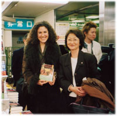

|

ソレン・バルデさんと訳者の片岡まりさん
夢の塊としてのアフリカ
〇今福龍太 僕が編集をしている山口昌男先生の著作集（筑摩書房）に「アフリカ」という巻があり、巻末に解説を書きました。山口先生にとってもアフリカは、ただ地図上にアフリカという場所があって、アフリカ人の生活があるという具体的な土地であるという以上に、例えばヨーロッパ人が文学に多様に描いたように、多くの人の夢や幻想の総体としてある。
あるいは人類学者や民族学者が、結局は西欧文明自体が行きづまっていたことから、１９世紀からアフリカに対してなにか特別な想像力を託して、調べたり、そこからいろんなものを吸収したりして、多くの著作を生み出した伝統がずっとヨーロッパにあった。山口先生自身がそれを吸収していて、山口先生にとってのアフリカは、訪ねる前にすでに相当大きな夢の塊になっていたのではないか、ということを書きました。
バルデさんにとっても、ヨーロッパの伝統としてのアフリカに対する大きな幻想、それは必ずしも否定的な意味ではなくて、ヨーロッパがアフリカをさまざまに想像する、その大きな力が存在する文化のなかで、おそらく少女時代からアフリカに対してすごく強い思いをもたれたのだと思うのです。18世紀、19世紀、とくにイギリスやフランスで少年少女向けアフリカ冒険ものがたくさん書かれているのですよね。こういう本が大きな影響をもったのでしょうか。
それとも文学の領域で、例えばヘミングウェイはケニアやタンザニアでサファリをして小説も書いていますし、フランスでいえば熱帯アフリカではないですけれども、北アフリカの世界に夢を見、そういう世界に消えてしまったアルチュール・ランボーみたいな詩人もいます。ヨーロッパがもっているアフリカ幻想、あるいはそのエキゾチックなアフリカに対する想像力というものとバルデさんのアフリカに対する興味とはつながっているのかどうかということを聞きたいなと思うのです。
人間の意志が裸のまま成長する場所
〇ソレン・バルデ まず私にとってのアフリカは、少女時代の『ジャングル・ブック』との出会いです。キプリングの書いた、イギリスが植民地化していたときのインドを舞台にした冒険物語で、ターザンに若干似ているところもあるのですけれども、一種の野生児の物語ですね。動物たちに育てられる少年モーグリの話です。ディズニー映画にもなっています。
『ジャングル・ブック』の舞台はアフリカではないのだけれども、自分にとってアフリカというイメージを一番最初につくった小説です。たぶん児童版で読んだのだと思うのですけれども、すごく強く印象に残って、人間が自然や動物とこんなふうな近しい関係をもてるのかということに驚きました。それと同時に、人間の肉体というものがものすごくストレートに天真爛漫に描かれていて、人間の肉体の自由な力にもすごく驚いて、それが自分のアフリカに結びついてしまった。
アフリカが実体として、情報として、知識として入ってくる以前に、「ア・フ・リ・カ」という言葉自体が音として自分に強い印象を与えるようになったのは、根っこで『ジャングル・ブック』のようなものとつながっているらしい。
その次に来たのがアラビアのロレンスです。これはアフリカに関心をもてばだれでも必ず通過するストーリーだと思いますが、私が最終的に訪ねたアフリカ南部とは全然違う北の砂漠の話ですけれども、アフリカにおいて自分の意志を貫く人間の物語として、私に非常な影響力をもちました。
その次にルネ・カイエという、トンブクトゥというマリの幻の都と言われている町を発見した人物の物語にも大きな影響を受けました。そういうふうになにか自分の意志を非常に自由に実現していく場、その場所において人間の意志が裸のまま成長していく。そういう力をアフリカ自体が持っているという思いが、自分をアフリカに結びつけていました。
未返却本、４０年ぶりの再会
○ 山口昌男 ひとつの事実だけを言って今日の驚きを。私は1960年ごろからパリにいたのですね。パリに行く前に１冊の本を読んだのです。それはルーティヒというドイツ人が英語で書いたThe religious system and social organization of the Herero: a study on Bantu culture『ヘレロの宗教システムと社会組織――バントゥー文化研究』という本です。私はバルデさんの『赤い大地のパリジェンヌ』を読んでいるうちにこの本を思い出した。ヘレロという部族のことが何回も出てくる、僕の昔読んだ本の部族かなと思って、晶文社の編集部の人にあの本、とにかくちょっと探してよ、と言っていたら、日本でただ一冊、東大の宗教学科にあったのを発見したと。それで行って、借りたいのだけれどもと言ったら、「それは４０年前に山口昌男という人が借りてまだ返していません」と言われてしまったと。
だから二つ、いいことと悪いことと両方あった。私は借りたまま忘れていたが、その本のことは覚えていた。驚くべき本で、彼女が生まれるはるか前に、私はその本によって彼女が暮らした土地の母系制のことを読んで知っていた。それが彼女が実際の経験のなかで知った母系制の話と私が本のなかで読んだことが今日の講演で出会ったということですね。
バルデさんとはずいぶんと共通の関心があったことが、いろいろ話してわかった。要するに人類学は今、衰えていると言われておりますけれども、やっぱり人類学は不滅です。旬の人類学はまさにこのような人だと思いました。
|